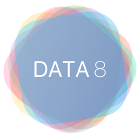

About Me
Hi! My name is James. I'm a current Computer Science MS student at Virginia Tech focusing on explainable AI and algorithmic fairness. I graduated from UC Berkeley in May 2023 with majors in computer science and data science and a minor in public policy. I'm passionate about human-centered and ethical technology and am interested in the intersection of public policy, governance, data, and technology. In my spare time, I dabble in programming, data science, graphic design, policy advocacy, and a little bit of cooking.
During my time at both UC Berkeley and Virginia Tech, I've been engaged in the classroom as a TA and instructor. In summer 2022 and 2023, I was the course instructor for Data 6: Introduction to Computational Thinking with Data, an introductory data science class at UC Berkeley intended for students without prior coding experience. As an undergraduate, I was a lead GSI (TA) for Data 8: Foundations of Data Science, UC Berkeley's introductory data science class (with over 2,000 students in Fall 2022). I am currently a Graduate TA for CS 1114: Introduction to Software Design at Virginia Tech.
Teaching
My favorite part of studying CS and data science at Berkeley was the opportunity to get taught by other undergraduate students, and in turn to teach other students myself.
I took Data 8: Foundations of Data Science my first semester at Cal and instantly fell in love with the class. I then volunteered as a "Lab Assistant" for two semesters before becoming a tutor and eventually an undergraduate student instructor (uGSI)—the Berkeley equivalent of a TA—in spring 2022. I served on Data 8 course staff for six semesters, and was the lead GSI responsible for content development and maintenance for the 2022-2023 academic year.
In summer 2022, I had the opportunity to teach Data 6, a relatively new Berkeley data science class for students without prior coding experience. As the instructor for the course, I was responsible developing and delivering content to a class of 60 students, managing assignments and course policies, and leading a six-person course staff. Over 80% of students—half of whom had no prior coding experience—achieved grades in the A+/A/A- range. I was grateful to be able to teach Data 6 again in Summer 2023.
CS 5806Advanced Machine Learning (Graduate Course)Virginia Tech
|
|
CS 1114Intro to Software DesignVirginia Tech
|
|
Data 6Intro to Computational Thinking with DataUniversity of California, Berkeley
|

|
Data 8Foundations of Data ScienceUniversity of California, Berkeley
|
 |
Connect With Me
Email: james [dot] p [dot] weichert [at] gmail
Resume: Download
|
|
|